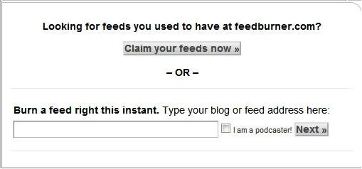
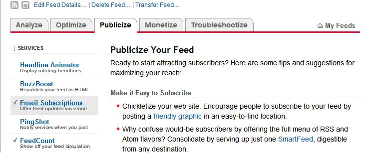
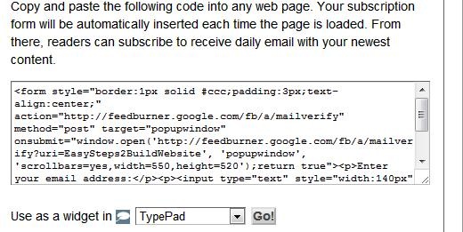

Feedburner email subscription service is a best way to drive targeted visitors to your blog. This is a free service so I would recommend this to all the bloggers. It provides many features and I will explain its various features in the coming posts. This post will teach you how to add subscription box so that readers can subscribe to feeds. Lets start with the main topic-
Steps to embed email subscription box to wordpress blog:
Step 1: You need a feedburner account for this, to create an account go to feedburner. If you have a gmail account then you can use gmail credentials to login as feedburner is owned by Google. After logging in, you will find a below screen.

Enter your feed address in given text box and click on “Next”. If you are running a wordpress blog then default feed would be “http://yourdomainname.com/feed”. For example default feed for my blog is “https://beginnersbook.com/feed”.
Step 2: In next page enter your feed title and feed address as shown in below screenshot. You can enter domain name in both places. Click on next at the bottom left corner of screen.

Step 3: Now you are done, in the next screen you will get the confirmation message. Click on the Feed title and then select the “Publicize” tab, you will find a below screen. Each tab has several features, which you can use to optimize your feeds, we will discuss various features of feedburner in coming posts, which you can use in your wordpress blog.

Step4: Under “Publicize” tab click on “Email subsciptions” in the left sidebar, as shown in above screenshot. In the next screen, click the button labeled “Activate”. Copy the code from first box, this is the code which will show a subscription box to your users.

Step 5: Now you have the code for email subscription box. You just need to embed the code in website so that, it would be visible to your readers. Go to wordpress Admin panel. Then go to Appearance->Widgets, select text widget and copy the above code, place it in a sidebar and you are done. You will be able to see the subscription box in the website’s sidebar. You can even change the look and feel of subscription box, customization is up to you. You can also check that I have customized my feedburner email subscription box.
If you have any questions regarding the topic, please feel free to ask me. I would love to answer your questions. If you are already a feedburner user, then share your experience so others get to know more about it.
tell me how to change the title of feedburner feeds?